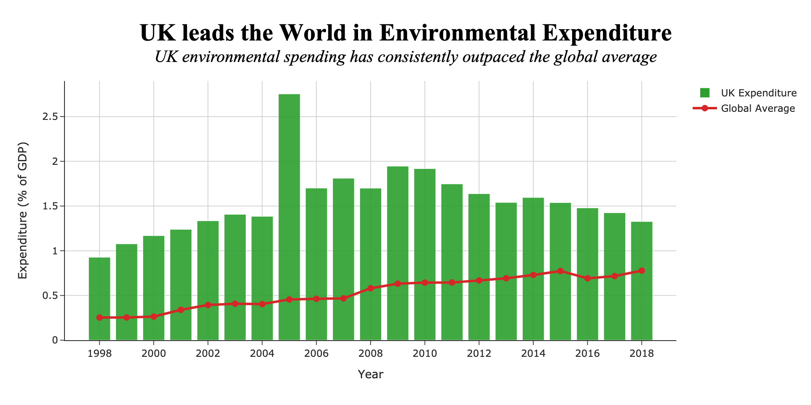
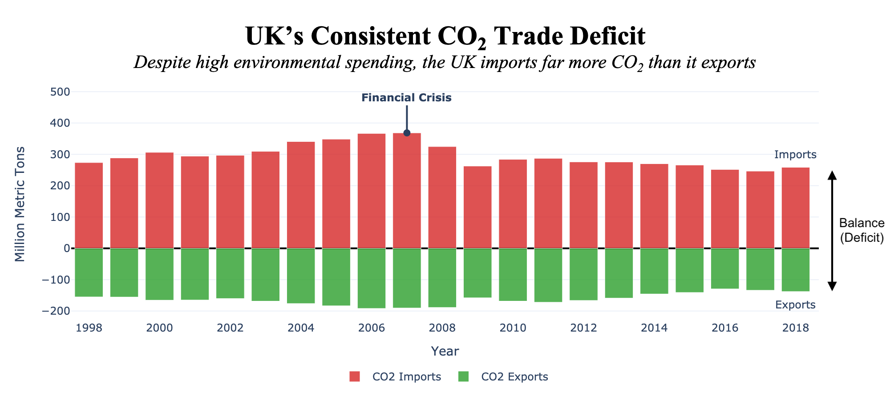

Proposition: The UK is a global leader in environmental protection spending.
FOR the Proposition

- Encoding asymmetry (UK = bar, Global = line) — I deliberately encoded the UK’s spending as bars while rendering the global average as a line. This creates an intuitive visual hierarchy where the UK’s contributions appear dominant and tangible, while the global average recedes into the background. Earnestness Score: -1.5
- Color coding to imply moral contrast — The UK is represented in green, a color culturally associated with environmental responsibility, while the global average is in red. This subtly reinforces the idea that the UK is doing the 'right' thing. Earnestness Score: -1
- Lack of contextual normalization — Comparing a developed nation to the global average hides variation in economic capacity. The global average will be heavily deflated by the large number of countries with lower environmental spending—either because it is not their priority or due to economic constraints. This omission makes the UK look more generous than it may actually be. Earnestness Score: -2
- Well-labeled axes and clear visual design — The visualization includes clearly labeled axes, appropriate scaling, and a direct title. These elements support honest communication of the data and make the visualization more accessible and interpretable to a general audience. Earnestness Score: +1.5
AGAINST the Proposition

- Inversion of export values — CO2 export values are inverted to fall below the x-axis, while imports rise above it. This exaggerates the gap and visually dramatizes the trade deficit. Earnestness Score: -2
- Stacked bar layout with zero as dividing axis — The layout uses the x-axis as a “moral dividing line,” giving a sense of imbalance. Earnestness Score: -1
- Layered subtitle framing — The subtitle explicitly states the UK’s failure to offset CO2 imports, rhetorically undercutting the earlier visual. Earnestness Score: -0.5
- Color framing of emissions — Imports are shown in red and exports in green, subtly leveraging color psychology to imply that CO2 imports are harmful and exports are virtuous. This adds a deep emotional meaning without altering the data itself. Earnestness Score: -0.5
- Effective use of annotations — The chart includes contextual annotations, such as the financial crisis and an indication of the trade deficit, given by the difference between imports and exports. This helps orient the viewer and add interpretive value, and guides the reader without overwhelming the visual. Earnestness Score: +1
Final Reflection
This project challenged my assumptions about neutrality in data visualization. Initially, I believed effective visualizations should aim for objectivity, but through the design of persuasive and deceptive visuals, I came to appreciate how much influence framing, encoding, and textual language wield over audience interpretation. Even seemingly small choices — like the direction of a bar or the use of green versus red — can have disproportionate rhetorical weight.
Designing the 'FOR' visualization was relatively straightforward because the dataset lent itself well to constructing a favorable narrative. The global average, by nature, is diluted by lower-income countries, making it easier for the UK to stand out when shown in isolation. However, designing the 'AGAINST' side was more challenging — I had to dig into secondary metrics (like CO2 trade imbalance) and rely on carefully framed encodings to undermine the UK's image as a leader.
This exercise made it clear that persuasive and deceptive techniques lie on a spectrum. While some choices—like axis truncation or cherry-picking—clearly cross ethical lines, others—like thoughtful annotation or ordering of categories—live in a grey area. I now believe that ethical visualization doesn’t mean avoiding persuasion; it means being transparent and reflective about one’s design intent. The most misleading visualizations are those that pretend to be neutral while subtly manipulating perception. As a result, I’ve grown more critical of not just what a chart shows, but how and why it shows it that way.